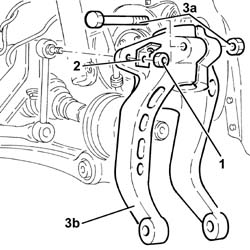
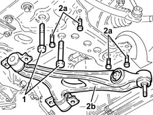

4410B40 lower wishbone (with balljoint) of left or right front suspension (one) - r+r -check wheel geometry separately
- Path
- Procedures > 44 SUSPENSION AND WHEELS > 4410 FRONT SUSPENSION > 4410B front suspension wishbones > 4410B40 lower wishbone (with balljoint) of left or right front suspension (one) - r+r -check wheel geometry separately
- Kind
- repair procedure (removal / refitting; the operation number is the code)
- Applies to
- all engines; all production periods
- Interactive page
- https://sloeber94.github.io/elrnDB-a156/en/#/3238184
Applies to: all engines; all production periods
 Removing
Removing
 Refitting
Refitting1. Unscrew the nut of the stabilizing bar articulated joint to the lower fork.
2. Remove the active sensor A.B.S. wiring supporting bracket
3. Unscrew the bolt (3a) and remove the lower fork which joins the shock absorber of the front suspension to the lower moving arm (3b).

Applies to: all engines; all production periods
1. Unscrew the screws of the stabilizing bar from the front suspension sleeper (side of moving arm removal).
Loosen the screws of the stabilizing bar to the front suspension sleeper (opposite side to that of moving arm removal).
2. Unscrew the screws (2a) and remove the lower moving arm of the front suspension (2b).

Applies to: all engines; all production periods
Refitting
RemovingReplace into its own place the lower moving arm of the front suspension and secure it with its proper screws to the torque.
 | Fastening | Component | Ø | Value (daNm) |
|---|---|---|---|---|
- | Bolt | FRONT SUSPENSION LOWER LEVER | M10 | 6.2 - 6.8 |
Tighten the screws of the stabilizing bar to the front suspension sleeper to the torque.
| Fastening | Component | Ø | Value (daNm) |
|---|---|---|---|---|
- | Bolt | FRONT ANTI-ROLL BAR | M8 | 2.6 - 3.2 |
Replace into its own place the lower fork which joins the shock absorber of the front suspension to the lower moving arm and secure it with its proper bolt to the torque.
| Fastening | Component | Ø | Value (daNm) |
|---|---|---|---|---|
- | Bolt | FRONT DAMPER FORK ON WISHBONE | M12 | 8.1 - 8.9 |
Replace into its own place the active sensor A.B.S. wiring supporting bracket
Tighten the nut of the stabilizing bar articulated joint to the lower fork to the torque.
| Fastening | Component | Ø | Value (daNm) |
|---|---|---|---|---|
- | Nut | FRONT ANTI-ROLL BAR JOINTS | M10 | 3.8 - 4.7 |